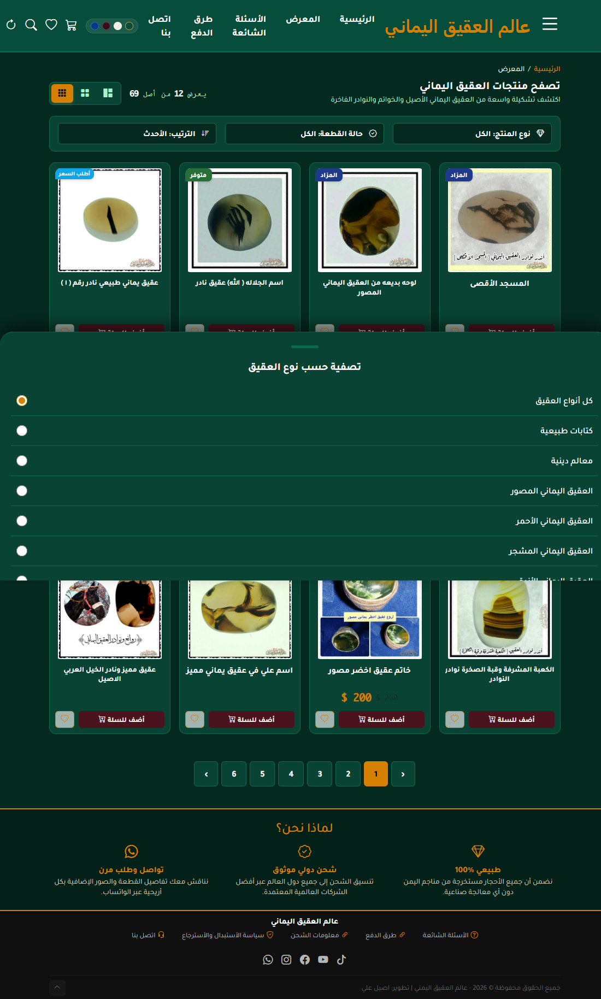
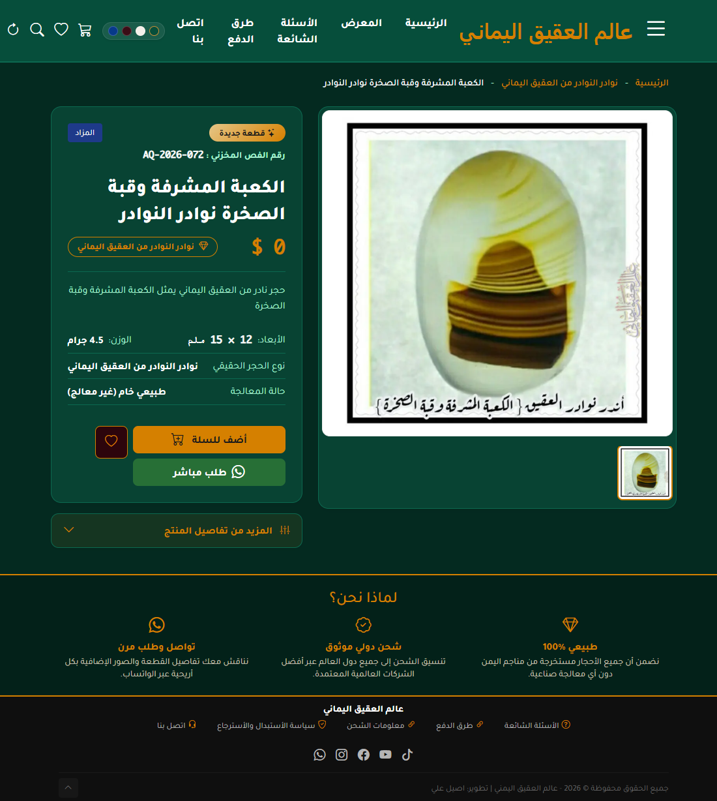
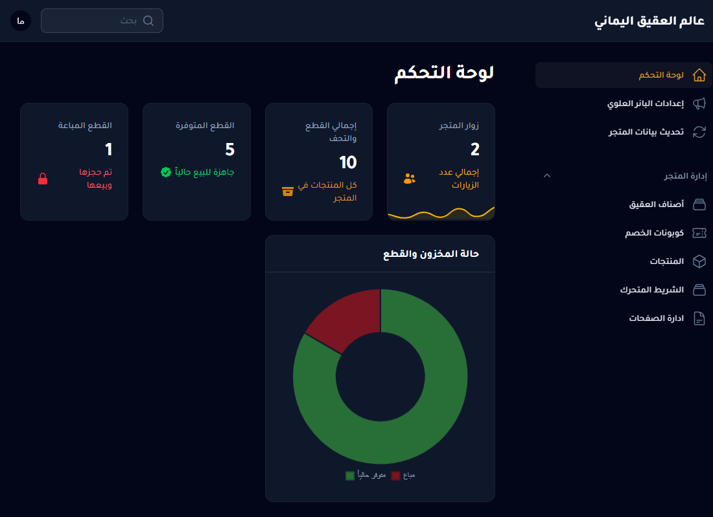

هدف المشروع
إنشاء واجهة إلكترونية تعرض منتجات العقيق اليماني وتتيح للزائر استكشاف المنتجات وتفاصيلها.
متجر إلكتروني متخصص في عرض منتجات العقيق اليماني، يضم كتالوجًا للمنتجات وصفحات للتفاصيل وسلة مشتريات وقائمة رغبات، مع إمكانية الانتقال لإتمام الطلب عبر واتساب.
يركز المشروع على تقديم المنتجات بطريقة منظمة وتسهيل وصول الزائر إلى القطعة التي يبحث عنها، مع توفير وظائف أساسية للتصفح وإدارة الاختيارات والانتقال إلى التواصل وإتمام الطلب.
إنشاء واجهة إلكترونية تعرض منتجات العقيق اليماني وتتيح للزائر استكشاف المنتجات وتفاصيلها.
تنظيم الوصول إلى الكتالوج وصفحات المنتجات وسلة المشتريات وقائمة الرغبات.
يتضمن المشروع مسارات محمية لبعض عمليات الإدارة، مثل تحديث الإعدادات وتغيير كلمة المرور.
تستند الوظائف التالية إلى المسارات الموجودة في ملف routes/web.php.
مسارات مخصصة للصفحة الرئيسية وكتالوج المنتجات.
عرض المنتج باستخدام معرّفه ورابط مختصر مناسب، مع مسار لمعالجة بعض الروابط القديمة.
مسارات لإضافة المنتجات إلى السلة وعرضها وإزالة العناصر أو إفراغ السلة.
يوجد مسار مخصص للانتقال من السلة إلى خطوة إتمام الطلب عبر واتساب.
توجد مسارات لتطبيق كوبون وإزالته من السلة.
مسارات لعرض قائمة الرغبات وإضافة المنتجات إليها وإزالتها.
صفحة اتصال ومسار لاستقبال الرسائل، إضافة إلى صفحات معلوماتية تعتمد على الرابط المختصر.
مسار مخصص لملف sitemap.xml لدعم اكتشاف الصفحات بواسطة محركات البحث.
مسارات محمية بتسجيل الدخول لتحديث الإعدادات وتغيير كلمة المرور.
يعتمد المشروع على Laravel، وتوضح أسماء المسارات والمتحكمات تنظيمًا يفصل بين استقبال الطلبات ومعالجة منطق التطبيق وعرض الصفحات.
إطار عمل وخلفية برمجية لتعريف المسارات وربطها بالمتحكمات وتنظيم وظائف الموقع.
نمط معماري يساعد على الفصل بين المسارات والمتحكمات والنماذج والواجهات.
من التقنيات المستخدمة في المشروع وفق المعلومات المتوفرة عنه.
يوضح المثال التالي كيف يربط Laravel عنوانًا بطلب معين بمتحكم مسؤول عن معالجته.
Route::get('/catalog', [
ProductController::class,
'index'
])->name('catalog.index');
Route::get('/product/{id}/{slug}', [
ProductController::class,
'show'
])->name('products.show');في المثال الأول، يوجّه المسار طلب عرض الكتالوج إلى الدالة index. وفي الثاني، يوجّه طلب تفاصيل منتج إلى الدالة show مع تمرير معرّف المنتج والـ slug.
استخدام معرّف المنتج مع slug في رابط التفاصيل، مع مسار لمعالجة الروابط القديمة.
توفير مسار مخصص لخريطة الموقع؛ أما محتواها الفعلي فيعتمد على تنفيذ SitemapController.
مسار ديناميكي لعرض صفحات معلوماتية باستخدام slug، مثل الصفحات التعريفية والسياسات.
استبدل الصور التالية بلقطات شاشة حقيقية من المتجر ولوحة الإدارة. احفظ الصور داخل مجلد images بجانب هذا الملف.




يعكس المشروع تطبيقًا عمليًا لتطوير متجر باستخدام Laravel، مع تنظيم المسارات وتوفير وظائف متعددة للكتالوج والمنتجات والسلة والمفضلة والصفحات المعلوماتية. كما يتيح المشروع عرض جوانب من العمل على الخلفية البرمجية وتنظيم وظائف التطبيق.